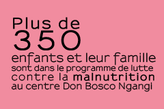
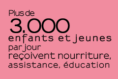

Centre Des Jeunes
Don Bosco Ngangi


- 


- 
- Présentation
- Bénéficiaires
- Activités
- Photos
Origines :
La Maison Marguerite est née en août 2009 afin de promouvoir la protection, l'émancipation sociale et économique et la défense des droits des femmes et de leurs enfants, selon les principes énoncés dans la Déclaration des Droits de l'Homme.
Le Centre Don Bosco avait déjà travaillé avec les filles vulnérables, en collaboration avec En Avant Les Enfants, sur le projet Inuka. La Maison Margueritte représente une nouvelle démonstration de l'attention portée sur les filles, affectées par un haut degré de vulnérabilité dans la ville de Goma, où la variable sexe est un facteur discriminant au niveau socio-économique. De plus, la guerre a amplifié de manière exponentielle le phénomène de violences sexuelles dont les femmes sont les principales victimes. Le drame est souvent double, la violence sexuelle subie a pour conséquence la répudiation et le rejet de la cellule familiale.
La Maison Margueritte ne veut pas seulement constituer un refuge pour ces filles, mais aussi leur offrir l'opportunité d'un futur meilleur à travers un parcours psycho-éducatif, de scolarisation et de formation professionnelle, orienté à leur permettre une réinsertion totale dans la société et de se reconstruire une vie avec espoir.
Le centre est ainsi devenu une deuxième étape dans le parcours de récupération psycho-sociale des filles de la rue, pour les accompagner à travers leur développement et leur réintégration socio-économique, la première étape étant la Maison Gahinja.
Objectif général :
Contribuer à diminuer la pauvreté sociale et économique (1° objectif du millénaire) et contribuer à promouvoir l'égalité des sexes et l'autonomie de femmes (3° objectif du millénaire), en faveur des filles vulnérables de la ville de Goma et des territoires limitrophes, dans la défense des droits de l'Enfant.
Objectifs spécifiques:
- Contribuer à la protection des filles, qui vivent dans des conditions de vulnérabilité et de marginalisation sociale, de la ville de Goma et des territoires limitrophes ;
- Assurer l'accueil des filles et de leurs enfants à travers la réalisation d'un centre d'accueil temporaire, pour leur permettre de suivre un parcours d'autonomisation psycho-sociale et économique d'une durée d'un an ;
- Appuyer la réintégration socio-économique des filles, pour faciliter leur réinsertion au sein de leur famille d'origine ou chez une famille d'accueil ou encore, dans le cas où cela ne sera pas possible, dans un logement de semi-autonomie avec les instruments nécessaires pour leur auto-prise en charge ;
- Contribuer à la lutte contre la stigmatisation et la marginalisation sociale des filles, à travers des actions de sensibilisation de la communauté locale et à travers un parcours de médiation familiale adressé aux familles des bénéficiaires.
- Téléchargez notre brochure complète concernant la maison Margueritte :
- - Version Couleur - 600 Mb
- - Version Noir et Blanc - 200 Mb
- Téléchargez notre brochure concernant le Centre en général :
- - Version Couleur - 600 Mb
- - Version Noir et Blanc - 200 Mb
Bénéficiaires :
- Les filles vulnérables, (filles de la rue, filles mères, filles victimes de violences sexuelles, filles rejetées par leur famille, etc.)
- Les familles des filles accueillies
- Les communautés locales.
Les filles accueillies dans le projet peuvent être internes, et bénéficier de l'accueil nocturne, ou externes, et bénéficier uniquement des activités diurnes : formations professionnelles, cours d'alphabétisation, appui psycho-social, activités éducatives et de sensibilisation.
Certaines bénéficières sont soutenues pour le paiement des frais scolaires et d'autres bénéficient de projets d'autonomisation.
Durée du parcours individuel de chaque bénéficière :
Chaque fille suit un parcours de deux ans: la première année est orienté vers un travail formatif et de préparation des filles et de leurs familles; la deuxième année est réservée à la réinsertion familiale et communautaire des filles, après un parcours d'accompagnement, monitorage et suivi. La durée du projet individuel et quand même évalué cas par cas, selon le vécu de chaque fille, ses ressources et sa situation familiale. Quand la réunification d'une fille chez sa famille n'est pas possible, elle pourra bénéficier d'un projet d'autonomie.
La durée du parcours est quand même évaluée au cas par cas, selon le vécu de chaque fille, ses ressources et sa situation familiale. Dans le cas où il ne serait pas possible effectuer la réunification de la fille avec sa famille, sont prévus des projets de semi- autonomie.
Depuis l'ouverture le centre a accueilli plus au moins 80 filles et 45 enfants et, en même temps, 40 filles et 25 enfants ont bénéficiées des activités diurnes (alphabétisation, formations professionnelles, soins médicaux, médiation familiale…).
- Téléchargez notre brochure complète concernant la maison Margueritte :
- - Version Couleur - 600 Mb
- - Version Noir et Blanc - 200 Mb
- Téléchargez notre brochure concernant le Centre en général :
- - Version Couleur - 600 Mb
- - Version Noir et Blanc - 200 Mb
Activités :
- Education à la vie, à la santé, à l'alimentation ;
- Education civique et aux droits de l'homme ;
- Scolarisation / alphabétisation
- Formations professionnelles (ateliers de coupe-couture, cours de cuisine, cours de coiffure) ;
- Activités récréatives (théâtre, danse, chant,)
Sélection et accueil des bénéficiaires :
Les filles qui arrivent au centre ou qui sont référées par des organismes étatiques et non-gouvernementaux locaux et internationaux, sont accueillies par l'équipe sociale qui cherche à reconstruire leur histoire et comprendre leurs besoins. Nous allons organiser une visite familiale pour vérifier la véracité des informations récoltées. Dans le cas où la fille rentre dans les critères d'accueil (comme bénéficière interne ou externe au projet), l'équipe éducative tâchera de lui garantir une prise en charge globale pour la satisfaction de ses besoins de base et pour le support médico-sanitaire pendant sa permanence au centre. La structure garantit un climat d'accueil positif, dans un environnement convivial, à caractère familial.
Accompagnement éducatif :
Affectivité, dialogue, écoute active, entretiens, conseils, remarques constructives, punitions, encouragements et thérapies de groupe sont quelques unes des méthodes éducatives utilisées par les éducatrices de la maison pour aider les filles à récupérer leur estime de soi, se réconcilier avec leur histoire et progresser dans leur parcours de croissance vers l'autonomie et dans la construction de leur futur.
Soutien et accompagnement psychologique :
L'activité du psychologue du service est destinée à soutenir psychologiquement les filles et à les aider à surmonter leurs traumatismes. Les filles seront également soutenues dans le parcours de préparation à la réintégration sociale et familiale.
Activités de recherche, médiation, réunification et monitorage familiale :
L'activité du psychologue du service est destinée à soutenir psychologiquement les filles et à les aider à surmonter leurs traumatismes. Les filles seront également soutenues dans le parcours de préparation à la réintégration sociale et familiale.
Les assistants sociaux mettent en œuvre quotidiennement un travail de recherche et contact avec les familles. L'objectif est la réinsertion des filles accueillies à la Maison Marguerite au sein de leurs familles d'origine. Ils sensibilisent et responsabilisent les familles, à travers des moments de rencontre individuels et en groupe, pour garantir une réintégration sociale durable.
Ils effectuent une activité de médiation également avec les familles des filles externes (filles qui bénéficient des activités diurnes, mais qui rentrent le soir dans leurs familles).Après la réunification, minimum deux visites de suivi sont prévues pour chaque bénéficiaire.
- Téléchargez notre brochure complète concernant la maison Margueritte :
- - Version Couleur - 600 Mb
- - Version Noir et Blanc - 200 Mb
- Téléchargez notre brochure concernant le Centre en général :
- - Version Couleur - 600 Mb
- - Version Noir et Blanc - 200 Mb
Photos
- Téléchargez notre brochure complète concernant la maison Margueritte :
- - Version Couleur - 600 Mb
- - Version Noir et Blanc - 200 Mb
- Téléchargez notre brochure concernant le Centre en général :
- - Version Couleur - 600 Mb
- - Version Noir et Blanc - 200 Mb